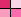

A Tool is an operation , or a set of operations on the data. The interactions (like mouse or key interactions) changes semantic depending on which tool is mounted. Some tool represents an "atomic" action (like the "adder' or the "eraser") , done only once before the tool is unmounted. Others are more like a set of actions with a "state" (ex. the room tool) . Every tool is represented by an icon in the toolbar.
The toolbar on the left side of the editor window shows the palette of tools which can be mounted . You can always unmount the current tool and choose another tool by a RIGHT-CLICK on the backgound. This opens a popup-menu with the same tools as the palette. The default tools is the arrow.
| arrow tool (default tool) tool that allow normal source managing , like selection, move , delete, redefine. |
|
| adder tool tool that allow source adding |
|
| eraser tool tool that allow source removing |
|
| recorder tool tool that allow recording/playback of sources trajectory |
|
|  | rooms tool tool that allow adding/moving/redefining rooms |